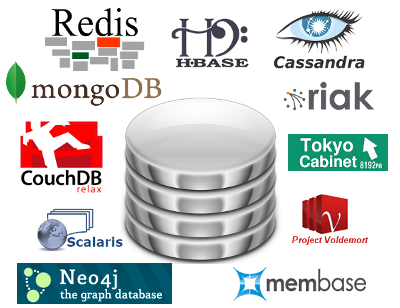

Alexey Vasiliev
- 6+ years experience
- Linux and Databases administrator
- Web and Mobile developer (Ruby, Java, JavaScript, Objective-C, C/C++)
- Open-Source developer
- WebP-ffi
- MongodbLogger for Rails
- Piro - Chrome extension for PivotalTracker
- SMTRails and SHTRails (shared templates for rails)
- SkypeKit for Ruby
PostgreSQL
PostgreSQL is an object-relational database management system.
We have two question:
- Why?
- How?
PostgreSQL features
Flexible Datatypes

Arrays
Flexible Datatypes
select array_agg(id) from endpoints group by application_id;
select (array['hi', 'there', 'everyone', 'at', 'hotcode'])[random()*2 + 1];
select name, tags from posts where tags @> array['it', 'sql'];
select unnest(tags) as tag from posts where title = 'About PostgreSQL';
Ranges (9.2+)
Flexible Datatypes
SELECT int4range(10, 20) @> 3;
SELECT daterange('["Jan 1 2013", "Jan 15 2013")') @> 'Jan 10 2013'::date;
$ ALTER TABLE reservation ADD EXCLUDE USING gist (during WITH &&);
$ INSERT INTO reservation VALUES (1108, '[2010-01-01 11:30, 2010-01-01 13:00)');
INSERT 0 1
$ INSERT INTO reservation VALUES (1108, '[2010-01-01 14:45, 2010-01-01 15:45)');
ERROR: conflicting key value violates exclusion constraint "reservation_during_excl"
DETAIL: Key (during)=([ 2010-01-01 14:45:00, 2010-01-01 15:45:00 )) conflicts
with existing key (during)=([ 2010-01-01 14:30:00, 2010-01-01 15:30:00 )).
XML and JSON (9.2+)
Flexible Datatypes
$ SELECT xpath('/my:a/text()', 'test ', ARRAY[ARRAY['my', 'http://example.com']]);
xpath
--------
{test}
$ SELECT * from json_demo;
id | username | email | posts_count
----+----------+-------------------+-------------
1 | john | john@gmail.com | 10
2 | mickael | mickael@gmail.com | 50
$ SELECT row_to_json(json_demo) FROM json_demo;
row_to_json
----------------------------------------------------------------------------
{"id":1,"username":"john","email":"john@gmail.com","posts_count":10}
{"id":2,"username":"mickael","email":"mickael@gmail.com","posts_count":50}
JSON and PLV8 for "schemaless" sql
Flexible Datatypes
CREATE OR REPLACE FUNCTION get_numeric(json_raw json, key text)
RETURNS numeric AS $$
var o = JSON.parse(json_raw);
return o[key];
$$ LANGUAGE plv8 IMMUTABLE STRICT;
SELECT * FROM members WHERE get_numeric(profile, 'age') = 36;
Time: 9340.142 ms
CREATE INDEX member_age ON members (get_numeric(profile, 'age'));
SELECT * FROM members WHERE get_numeric(profile, 'age') = 36;
Time: 57.429 ms
JSON functions (comming with 9.3)
Flexible Datatypes
- array_to_json (present in 9.2)
- row_to_json (present in 9.2)
- to_json
- json_array_length
- json_each
- json_each_text
- json_extract_path
- json_extract_path_text
- json_object_keys
- json_populate_record
- json_populate_recordset
- json_array_elements
Foreign Data Wrappers (FDWs)
Extensions
- PostGIS
- PostPic
- PL/Proxy
- PgMemcache
- Prefix
- pgSphere
- Multicorn
- Hstore
- Intarray
- Dblink
- many others...

How PostgreSQL
The Base for the Begin
- Do not use the default settings
- Use the latest version
- EXPLAIN ANALYZE and indexes, indexes, indexes
Functional Indexes
Functional and Partial Indexes
Index on expression
CREATE INDEX foo_name_first_idx
ON foo ((lower(substr(foo_name, 1, 1))));
for selects
SELECT * FROM foo
WHERE lower(substr(foo_name, 1, 1)) = 's';
Partial Indexes
Functional and Partial Indexes
Index refers to the predicate WHERE
CREATE INDEX access_log_client_ip_ix ON access_log (client_ip)
WHERE NOT (client_ip > inet '192.168.100.0' AND
client_ip < inet '192.168.100.255');
for selects
SELECT * FROM access_log
WHERE client_ip = '192.168.100.45';
Create Index Concurrently
Instead
CREATE INDEX sales_quantity_index ON sales_table (quantity);
this better for huge table
CREATE INDEX CONCURRENTLY sales_quantity_index ON sales_table (quantity);
but be careful
Indexes:
"idx" btree (col) INVALID
Vertical and Horizontal Scaling
Buying a bigger box is quick(ish). Redesigning software is not.
37 Signals Basecamp upgraded to 128 GB DB server: don’t need to pay the complexity tax yet
How to use Partitioning
Partitioning
CREATE TABLE my_logs(
id SERIAL PRIMARY KEY,
logdate TIMESTAMP NOT NULL,
data JSON
);
CREATE TABLE my_logs2012m10 (
CHECK ( logdate >= DATE '2012−10−01' AND logdate < DATE '2012−11−01' )
) INHERITS (my_logs);
CREATE INDEX my_logs2012m10_logdate ON my_logs2012m10 (logdate);
Management Partition
Partitioning
Simple cleanup
DROP TABLE my_logs2012m06;
or remove partition from partitioning
ALTER TABLE my_logs2012m06
NO INHERIT my_logs;
Smart Query Optimization
Partitioning
partitioning_test=# EXPLAIN SELECT ∗ FROM my_logs WHERE logdate > '2012−08−01';
QUERY PLAN
−−−−−−−−−−−−−−−−−−−−−−−−−−−−−−−−−−−−−−−−−−−−−−−−−−−−−−−−−−−−−−−−−−−−−−
Result ( cost =6.81..41.87 rows=660 width=52)
−> Append ( cost =6.81..41.87 rows=660 width=52)
−> Bitmap Heap Scan on my_logs ( cost =6.81..20.93 rows=330 width=52)
Recheck Cond: ( logdate > '2012−08−01 00:00:00' : : timestamp without time zone)
−> Bitmap Index Scan on my_logs_logdate ( cost =0.00..6.73 rows=330 width=0)
Index Cond: (logdate > '2012−08−01 00:00:00' : : timestamp without time zone)
−> Bitmap Heap Scan on my_logs2012m08 my_logs ( cost =6.81..20.93 rows=330 width=52)
Recheck Cond: ( logdate > '2012−08−01 00:00:00' : : timestamp without time zone)
−> Bitmap Index Scan on my_logs2012m08_logdate ( cost =0.00..6.73 rows=330 width=0)
Index Cond: (logdate > '2010−08−01 00:00:00' : : timestamp without time zone)
(10 rows)
Replication Solutions
Replication
- Streaming Replication (build in)
- Slony-I
- Pgpool-I/II
- Bucardo
- Londiste
- RubyRep
- Postgres-R
- many others...

Streaming Replication
Replication
- Advantages:
- Log-shipping instead triggers
- Multiple standbys
- Continuous recovery
- Easy monitoring
- Disadvantages:
- You can replicate only full database
- No failover
- No load balancing
Pgpool-II + Streaming Replication = <3
Replication
- Ease of setup and maintenance
- Adding slaves without sacrificing performance
- More slaves - more performance on reading (load balancing)
- Automatic switch to slave if master fail (failover)
PostgreSQL as document store
What I want?
- easily store semi-structured data
- efficiency query on that data
How about hstore?
Advantages:
- already in contrib
- support index
Disadvantages:
- no nesting
- only strings
JSON datatype! (9.2)
{ +
"name": "Litzy Satterfield", +
"age": 24, +
"siblings": 2, +
"faculty": false, +
"numbers": [ +
{ +
"type": "work", +
"number": "684.573.3783 x368"+
}, +
{ +
"type": "home", +
"number": "625.112.6081" +
} +
] +
}
JSON datatype! (9.2)
$ SELECT * from json_demo;
id | username | email | posts_count
----+----------+-------------------+-------------
1 | john | john@gmail.com | 10
2 | mickael | mickael@gmail.com | 50
(2 rows)
$ SELECT row_to_json(json_demo) FROM json_demo;
row_to_json
----------------------------------------------------------------------------
{"id":1,"username":"john","email":"john@gmail.com","posts_count":10}
{"id":2,"username":"mickael","email":"mickael@gmail.com","posts_count":50}
(2 rows)
$ SELECT array_to_json(array_agg(json_demo)) FROM json_demo;
array_to_json
----------------------------------------------------------------------------
[{"id":1,"username":"john","email":"john@gmail.com","posts_count":10},
{"id":2,"username":"mickael","email":"mickael@gmail.com","posts_count":50}]
(1 row)
plv8

why javascript?
- everywhere
- good parts
- trusted language
v8 javascript engine
- compiles to native code (really fast)
- generational gc
Fibonacci
plv8
CREATE OR REPLACE FUNCTION
psqlfib(n int) RETURNS int AS $$
BEGIN
IF n < 2 THEN
RETURN n;
END IF;
RETURN psqlfib(n-1) + psqlfib(n-2);
END;
$$ LANGUAGE plpgsql IMMUTABLE STRICT;
select n, psqlfib(n)
from generate_series(0,30,5) as n;
n | psqlfib
----+---------
0 | 0
5 | 5
10 | 55
15 | 610
20 | 6765
25 | 75025
30 | 832040
(7 rows)
Time: 34014.299 ms
Fibonacci
plv8
CREATE OR REPLACE FUNCTION
fib(n int) RETURNS int as $$
function fib(n) {
return n<2 ? n : fib(n-1) + fib(n-2)
}
return fib(n)
$$ LANGUAGE plv8 IMMUTABLE STRICT;
select n, fib(n)
from generate_series(0,30,5) as n;
n | fib
----+--------
0 | 0
5 | 5
10 | 55
15 | 610
20 | 6765
25 | 75025
30 | 832040
(7 rows)
Time: 33.430 ms
Fibonacci (with cache in js object)
plv8
CREATE OR REPLACE FUNCTION
fib2(n int) RETURNS int as $$
var memo = {0: 0, 1: 1}
function fib(n) {
if(!(n in memo))
memo[n] = fib(n-1) + fib(n-2)
return memo[n]
}
return fib(n);
$$ LANGUAGE plv8 IMMUTABLE STRICT;
select n, fib2(n)
from generate_series(0,30,5) as n;
n | fib2
----+--------
0 | 0
5 | 5
10 | 55
15 | 610
20 | 6765
25 | 75025
30 | 832040
(7 rows)
Time: 0.535 ms
Summary about speed of plv8
Speed increased in 63578 times (!!!)
JSON datatype + plv8
CREATE TABLE members ( profile json );
SELECT count(*) FROM members;
count
---------
1000000
(1 row)
Time: 201.109 ms
JSON datatype + plv8
CREATE OR REPLACE FUNCTION get_numeric(json_raw json, key text)
RETURNS numeric AS $$
var o = JSON.parse(json_raw);
return o[key];
$$ LANGUAGE plv8 IMMUTABLE STRICT;
SELECT * FROM members WHERE get_numeric(profile, 'age') = 36;
Time: 9340.142 ms
CREATE INDEX member_age ON members (get_numeric(profile, 'age'));
SELECT * FROM members WHERE get_numeric(profile, 'age') = 36;
Time: 57.429 ms
JSON datatype in PostgreSQL < 9.2
JSON datatype + plv8
CREATE OR REPLACE FUNCTION
valid_json(json text)
RETURNS BOOLEAN AS $$
try {
JSON.parse(json); return true;
} catch(e) {
return false;
}
$$ LANGUAGE plv8 IMMUTABLE STRICT;
CREATE DOMAIN json AS TEXT
CHECK(valid_json(VALUE));
$ INSERT INTO members
VALUES('not good json');
ERROR: value for domain json
violates check constraint "json_check"
$ INSERT INTO members
VALUES('{"good": "json", "is": true}');
INSERT 0 1
$ select * from members;
profile
------------------------------
{"good": "json", "is": true}
(1 row)
JSON datatype + plv8 = CouchDB
JSON datatype + plv8
- Almost the same as CouchDB (without HTTP wiki.postgresql.org/wiki/HTTP_API)
- But PostgreSQL can combine indexes :)
JSON datatype + plv8 = CouchDB
JSON datatype + plv8
explain analyze select count(*) from members where
get_numeric(profile, 'age')=26 and get_numeric(profile, 'siblings')=1;
QUERY PLAN
-----------------------------------------------------------------------------------------------------------------------------------------------
Aggregate (cost=301.38..301.39 rows=1 width=0) (actual time=106.420..106.420 rows=1 loops=1)
-> Bitmap Heap Scan on members (cost=190.46..301.31 rows=25 width=0) (actual time=92.641..104.634 rows=6911 loops=1)
Recheck Cond: ((get_numeric(profile, 'siblings'::text) = 1::numeric) AND (get_numeric(profile, 'age'::text) = 26::numeric))
-> BitmapAnd (cost=190.46..190.46 rows=25 width=0) (actual time=89.192..89.192 rows=0 loops=1)
-> Bitmap Index Scan on member_siblings (cost=0.00..95.10 rows=5000 width=0) (actual time=72.387..72.387 rows=339432 loops=1)
Index Cond: (get_numeric(profile, 'siblings'::text) = 1::numeric)
-> Bitmap Index Scan on member_age (cost=0.00..95.10 rows=5000 width=0) (actual time=7.725..7.725 rows=13732 loops=1)
Index Cond: (get_numeric(profile, 'age'::text) = 26::numeric)
Total runtime: 106.492 ms
(9 rows)
Mustache.js in PostgreSQL
plv8

Logic-less templates.
Mustache.js in PostgreSQL
plv8
create or replace function mustache(template text, view json)
returns text as $$
// …400 lines of mustache.js…
return Mustache.to_html(template, JSON.parse(view))
$$ LANGUAGE plv8 IMMUTABLE STRICT;
select mustache(
'hello {{#things}}{{.}} {{/things}}:) {{#data}}{{key}}{{/data}}',
'{"things": ["world", "from", "postgresql"], "data": {"key": "and me"}}'
);
mustache
---------------------------------------
hello world from postgresql :) and me
(1 row)
Time: 0.837 ms
Clustering solutions
Clustering
- Pl/Proxy
- Postgres-XC
- GridSQL
- Greenplum
Radical Additional Options
Clustering
"NoSQL" database
- CouchDB, MongoDB, HBase, Cassandra, Redis
- Document store
- Map/Reduce querying

<Thank You!>
Contact information